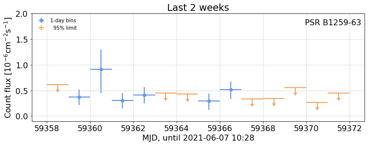

---

title: B1259-63 Analysis

keywords: fastai
sidebar: home_sidebar

summary: "Create a B1259-63 (aka PSR J1302-6350) light curve using Bayesian Blocks  "
description: "Create a B1259-63 (aka PSR J1302-6350) light curve using Bayesian Blocks  "
nb_path: "nbs/B1259.ipynb"
---
<!--

#################################################
### THIS FILE WAS AUTOGENERATED! DO NOT EDIT! ###
#################################################
# file to edit: nbs/B1259.ipynb
# command to build the docs after a change: nbdev_build_docs

-->

<div class="container" id="notebook-container">
        
    {% raw %}
    
<div class="cell border-box-sizing code_cell rendered">

</div>
    {% endraw %}

<div class="cell border-box-sizing text_cell rendered"><div class="inner_cell">
<div class="text_cell_render border-box-sizing rendered_html">
<ul>
<li><p><a href="https://arxiv.org/pdf/astro-ph/0506280.pdf">HESS high-energy results</a></p>
</li>
<li><p><a href="https://arxiv.org/pdf/1912.05868.pdf">Previouis <em>fermi</em> paper</a></p>
</li>
</ul>

</div>
</div>
</div>
    {% raw %}
    
<div class="cell border-box-sizing code_cell rendered">

</div>
    {% endraw %}

<div class="cell border-box-sizing text_cell rendered"><div class="inner_cell">
<div class="text_cell_render border-box-sizing rendered_html">
<h2 id="Special-data-check">Special data check<a class="anchor-link" href="#Special-data-check"> </a></h2>
</div>
</div>
</div>
    {% raw %}
    
<div class="cell border-box-sizing code_cell rendered">
<div class="input">

<div class="inner_cell">
    <div class="input_area">
<div class=" highlight hl-ipython3"><pre><span></span><span class="n">clear</span> <span class="o">=</span> <span class="kc">True</span>
<span class="c1">#update_cache(); </span>
</pre></div>

    </div>
</div>
</div>

</div>
    {% endraw %}

    {% raw %}
    
<div class="cell border-box-sizing code_cell rendered">

</div>
    {% endraw %}

    {% raw %}
    
<div class="cell border-box-sizing code_cell rendered">

<div class="output_wrapper">
<div class="output">

<div class="output_area">


<div class="output_markdown rendered_html output_subarea ">
<h2 id="B1259Periastron" class="doc_header"><code>class</code> <code>B1259Periastron</code><a href="https://github.com/tburnett/light_curves/tree/master/light_curves/b1259.py#L14" class="source_link" style="float:right">[source]</a></h2><blockquote><p><code>B1259Periastron</code>(<strong>**<code>kwargs</code></strong>) :: <code>WtLike</code></p>
</blockquote>

</div>

</div>

</div>
</div>

</div>
    {% endraw %}

    {% raw %}
    
<div class="cell border-box-sizing code_cell rendered">
<div class="input">

<div class="inner_cell">
    <div class="input_area">
<div class=" highlight hl-ipython3"><pre><span></span><span class="n">weekly</span> <span class="o">=</span> <span class="bp">self</span><span class="o">=</span><span class="n">B1259Periastron</span><span class="p">(</span><span class="n">clear</span><span class="o">=</span> <span class="n">clear</span><span class="p">)</span>
</pre></div>

    </div>
</div>
</div>

<div class="output_wrapper">
<div class="output">

<div class="output_area">

<div class="output_subarea output_stream output_stdout output_text">
<pre>SourceData: photons and exposure for PSR B1259-63: Saving to cache with key &#34;PSR_B1259-63_data&#34;
loading all filesSourceData: Assembling photon data and exposure for source PSR B1259-63
	from folder &#34;/home/burnett/wtlike_data/data_files&#34;, with 670 files,
	Weights from file PSR_B1259-63_weights.pkl
..............................................................................................................................................................................................................................................................................................................................................................................................................................................................................................................................................................................................................................................................................................
SourceData: Source PSR B1259-63 with:
	 data:       881,665 photons from 2008-08-04 to 2021-06-07
	 exposure: 3,370,383 intervals,  average flux 3477 cm^2 for 100.6 Ms
	 rates:  source 8.18e-09/s, background 2.51e-06/s, S/N ratio 3.26e-03
CellData: Bin photon data into 669 1-week bins from 54683.0 to 59366.0
LightCurve: select 662 cells for fitting with e&gt;1 &amp; n&gt;2
</pre>
</div>
</div>

</div>
</div>

</div>
    {% endraw %}

    {% raw %}
    
<div class="cell border-box-sizing code_cell rendered">
<details class="description">
      <summary data-open="Hide Code" data-close="Show Code"></summary>
        <summary></summary>
        <div class="input">

<div class="inner_cell">
    <div class="input_area">
<div class=" highlight hl-ipython3"><pre><span></span><span class="k">def</span> <span class="nf">B1259</span><span class="p">(</span> <span class="n">clear</span><span class="o">=</span><span class="kc">False</span><span class="p">):</span>
    <span class="sa">r</span><span class="sd">&quot;&quot;&quot;</span>
<span class="sd">    ## Fit to all data</span>

<span class="sd">    {date}</span>
<span class="sd">    </span>
<span class="sd">    Create a `WtLike` object with all the data</span>
<span class="sd">    </span>
<span class="sd">    {outp}</span>
<span class="sd"> </span>
<span class="sd">    ## The full weekly-interval light curve, showing the BB partitions</span>
<span class="sd">    {out2}</span>
<span class="sd">    {fig2}</span>
<span class="sd">    Table of fits (note that the &quot;flux&quot; column is relative to the 12-year count flux measurement</span>
<span class="sd">    6.7e-9 cm**-2 s**-1.</span>
<span class="sd">    {bbf}</span>
<span class="sd">    </span>
<span class="sd">    ## Expand about each periastron</span>
<span class="sd"> </span>
<span class="sd">    #### Periastron dates</span>

<span class="sd">    Assuming {period}-day orbital period, the MJD and UTC values are:</span>
<span class="sd">    </span>
<span class="sd">    {utc}</span>
<span class="sd"> </span>
<span class="sd">    Expand the above, with 1-day bins, following those dates:</span>

<span class="sd">    {fig3}</span>
<span class="sd">    </span>
<span class="sd">    ## Recent detail </span>
<span class="sd">    {out4}{fig4}</span>
<span class="sd">    </span>
<span class="sd">    &quot;&quot;&quot;</span>
    <span class="k">global</span> <span class="n">weekly</span> <span class="c1">#  make availlable for follow-up cells</span>

 
    <span class="n">pd</span><span class="o">.</span><span class="n">set_option</span><span class="p">(</span><span class="s1">&#39;display.precision&#39;</span><span class="p">,</span> <span class="mi">4</span><span class="p">)</span><span class="c1">#, &#39;display.colheader_justify&#39;,&#39;left&#39;)</span>

    
    <span class="k">with</span> <span class="n">capture_print</span><span class="p">(</span><span class="s1">&#39;Output from analysis: create cells, fit each, run BB partition, fit partitions.&#39;</span><span class="p">)</span> <span class="k">as</span> <span class="n">outp</span><span class="p">:</span>
        <span class="k">if</span> <span class="n">weekly</span> <span class="ow">is</span> <span class="kc">None</span> <span class="ow">or</span> <span class="n">clear</span><span class="p">:</span>
            <span class="n">weekly</span> <span class="o">=</span> <span class="n">B1259Periastron</span><span class="p">(</span><span class="n">time_bins</span><span class="o">=</span><span class="p">(</span><span class="mi">0</span><span class="p">,</span><span class="mi">0</span><span class="p">,</span><span class="mi">7</span><span class="p">),</span> <span class="n">clear</span><span class="o">=</span><span class="n">clear</span><span class="p">)</span><span class="c1">#.bb_view()</span>
        <span class="k">else</span><span class="p">:</span>
            <span class="nb">print</span><span class="p">(</span><span class="s1">&#39;(already done)&#39;</span><span class="p">)</span>
        <span class="n">bb</span> <span class="o">=</span> <span class="n">weekly</span><span class="o">.</span><span class="n">bb_view</span><span class="p">(</span><span class="mf">0.5</span><span class="p">)</span>
    
    <span class="n">bbf</span> <span class="o">=</span> <span class="n">monospace</span><span class="p">(</span><span class="nb">str</span><span class="p">(</span><span class="n">bb</span><span class="o">.</span><span class="n">fluxes</span><span class="p">),</span> <span class="s1">&#39;BB fit table&#39;</span><span class="p">,</span> <span class="nb">open</span><span class="o">=</span><span class="kc">False</span><span class="p">)</span>

    <span class="c1"># fig 2: full light curbe</span>
    <span class="n">plt</span><span class="o">.</span><span class="n">rc</span><span class="p">(</span><span class="s1">&#39;font&#39;</span><span class="p">,</span> <span class="n">size</span><span class="o">=</span><span class="mi">16</span><span class="p">)</span>
    
    <span class="n">fig2</span> <span class="o">=</span> <span class="n">figure</span><span class="p">(</span> <span class="n">bb</span><span class="o">.</span><span class="n">plot</span><span class="p">(</span><span class="n">fignum</span><span class="o">=</span><span class="mi">2</span><span class="p">,</span> <span class="n">figsize</span><span class="o">=</span><span class="p">(</span><span class="mi">15</span><span class="p">,</span><span class="mi">4</span><span class="p">),</span> <span class="n">title</span><span class="o">=</span><span class="s1">&#39;Full weekly light curve&#39;</span><span class="p">),</span>
                  <span class="n">width</span><span class="o">=</span><span class="mi">600</span><span class="p">)</span>
    
    <span class="c1"># fig 3 -- stack light curves</span>
    <span class="n">utc</span> <span class="o">=</span> <span class="n">monospace</span><span class="p">(</span><span class="nb">str</span><span class="p">(</span><span class="n">weekly</span><span class="o">.</span><span class="n">date_info</span><span class="p">()))</span> 
    <span class="k">with</span> <span class="n">capture_print</span><span class="p">(</span><span class="s1">&#39;Output from periastron analyses&#39;</span><span class="p">)</span> <span class="k">as</span> <span class="n">out2</span><span class="p">:</span>
        <span class="n">fig3</span> <span class="o">=</span> <span class="n">figure</span><span class="p">(</span> <span class="n">weekly</span><span class="o">.</span><span class="n">stacked_plots</span><span class="p">(</span> <span class="n">ylim</span><span class="o">=</span><span class="p">(</span><span class="mi">4</span><span class="p">,</span><span class="mi">300</span><span class="p">),</span> <span class="n">fignum</span><span class="o">=</span><span class="mi">3</span><span class="p">),</span> <span class="n">width</span><span class="o">=</span><span class="mi">600</span><span class="p">)</span>
    
    <span class="c1"># fit 4 -- last two weeks</span>
    <span class="k">with</span> <span class="n">capture_print</span><span class="p">(</span><span class="sa">f</span><span class="s1">&#39;Output, with light curve table, from selecting the last two weeks&#39;</span><span class="p">)</span> <span class="k">as</span> <span class="n">out4</span><span class="p">:</span>
        <span class="n">recent_wk</span> <span class="o">=</span> <span class="n">weekly</span><span class="o">.</span><span class="n">view</span><span class="p">(</span><span class="o">-</span><span class="mi">14</span><span class="p">,</span><span class="mi">0</span><span class="p">,</span><span class="mi">1</span><span class="p">)</span>
        <span class="nb">print</span><span class="p">(</span><span class="n">recent_wk</span><span class="o">.</span><span class="n">fluxes</span><span class="p">)</span>
        <span class="n">fig4</span><span class="o">=</span><span class="n">figure</span><span class="p">(</span>
            <span class="n">recent_wk</span><span class="o">.</span><span class="n">plot</span><span class="p">(</span><span class="n">show_flux</span><span class="o">=</span><span class="kc">True</span><span class="p">,</span> <span class="n">ylim</span><span class="o">=</span><span class="p">(</span><span class="o">-.</span><span class="mi">1</span><span class="p">,</span><span class="mi">2</span><span class="p">),</span> <span class="n">title</span><span class="o">=</span><span class="s1">&#39;Last 2 weeks&#39;</span><span class="p">,</span>
                       <span class="n">xlabel</span><span class="o">=</span><span class="sa">f</span><span class="s1">&#39;MJD, until </span><span class="si">{</span><span class="n">UTC</span><span class="p">(</span><span class="n">weekly</span><span class="o">.</span><span class="n">stop</span><span class="p">)</span><span class="si">}</span><span class="s1">&#39;</span><span class="p">,</span><span class="n">fignum</span><span class="o">=</span><span class="mi">4</span><span class="p">),</span>
            <span class="n">caption</span><span class="o">=</span><span class="kc">None</span><span class="p">,</span> <span class="n">width</span><span class="o">=</span><span class="mi">600</span><span class="p">)</span>
  
    <span class="k">return</span> <span class="nb">locals</span><span class="p">()</span>

<span class="n">nbdoc</span><span class="p">(</span><span class="n">B1259</span><span class="p">,</span> <span class="n">clear</span><span class="o">=</span><span class="kc">False</span><span class="p">)</span>
</pre></div>

    </div>
</div>
</div>

    </details>
<div class="output_wrapper">
<div class="output">

<div class="output_area">


<div class="output_markdown rendered_html output_subarea ">
<h2 id="Fit-to-all-data">Fit to all data<a class="anchor-link" href="#Fit-to-all-data"> </a></h2><p>2021-06-07 07:08</p>
<p>Create a <code>WtLike</code> object with all the data</p>
<p><details  class="nbdoc-description" >  <summary> Output from analysis: create cells, fit each, run BB partition, fit partitions. </summary>  <div style="margin-left: 5%"><pre>(already done)<br>LightCurve: select 662 cells for fitting with e&gt;1 & n&gt;2<br>Bayesian Blocks: using penalty 0.5<br>Partitioned 662 cells into 31 blocks, using LikelihoodFitness <br>LightCurve: Loaded 31 / 31 cells for fitting<br></pre></div> </details></p>
<h2 id="The-full-weekly-interval-light-curve,-showing-the-BB-partitions">The full weekly-interval light curve, showing the BB partitions<a class="anchor-link" href="#The-full-weekly-interval-light-curve,-showing-the-BB-partitions"> </a></h2><p><details  class="nbdoc-description" >  <summary> Output from periastron analyses </summary>  <div style="margin-left: 5%"><pre>CellData: Bin photon data into 125 1-day bins from 55544.7 to 55669.7<br>LightCurve: select 119 cells for fitting with e&gt;1 & n&gt;2<br>CellData: Bin photon data into 125 1-day bins from 56781.4 to 56906.4<br>LightCurve: select 125 cells for fitting with e&gt;1 & n&gt;2<br>CellData: Bin photon data into 125 1-day bins from 58018.1 to 58143.1<br>LightCurve: select 125 cells for fitting with e&gt;1 & n&gt;2<br>CellData: Bin photon data into 125 1-day bins from 59254.9 to 59379.9<br>LightCurve: select 118 cells for fitting with e&gt;1 & n&gt;2<br>LightCurve: select 119 cells for fitting with e&gt;1 & n&gt;2<br>Bayesian Blocks: using penalty 0.5<br>Partitioned 119 cells into 12 blocks, using LikelihoodFitness <br>LightCurve: Loaded 12 / 12 cells for fitting<br>LightCurve: select 125 cells for fitting with e&gt;1 & n&gt;2<br>Bayesian Blocks: using penalty 0.5<br>Partitioned 125 cells into 20 blocks, using LikelihoodFitness <br>LightCurve: Loaded 20 / 20 cells for fitting<br>LightCurve: select 125 cells for fitting with e&gt;1 & n&gt;2<br>Bayesian Blocks: using penalty 0.5<br>Partitioned 125 cells into 16 blocks, using LikelihoodFitness <br>LightCurve: Loaded 16 / 16 cells for fitting<br>LightCurve: select 118 cells for fitting with e&gt;1 & n&gt;2<br>Bayesian Blocks: using penalty 0.5<br>Partitioned 118 cells into 15 blocks, using LikelihoodFitness <br>LightCurve: Loaded 15 / 15 cells for fitting<br></pre></div> </details></p>
<figure style="margin-left: 5%" title="Figure 1">  <a href="images/B1259_fig_01.png" title="images/B1259_fig_01.png">       </a> </figure>
Table of fits (note that the "flux" column is relative to the 12-year count flux measurement
6.7e-9 cm**-2 s**-1.
<details  class="nbdoc-description" >  <summary> BB fit table </summary>  <div style="margin-left: 5%"><pre>          t      tw       n     ts      flux           errors     limit<br>0   55103.0   840.0  145438    0.0    0.0000       (0, 0.039)    0.2348<br>1   55544.0    42.0    8515   37.3   12.1020   (-2.155, 2.17)   15.6960<br>2   55568.5     7.0    2302    1.6    1.9816  (-1.715, 2.362)    7.2135<br>3   55575.5     7.0    1923   64.3   40.5665  (-5.752, 5.841)   50.3100<br>4   55582.5     7.0    1746  253.9   97.9705   (-7.73, 7.855)  111.0829<br>5   55593.0    14.0    2654  228.5   70.7162  (-5.669, 5.743)   80.2762<br>6   55607.0    14.0    2879   89.3   39.0787  (-4.729, 4.789)   47.0466<br>7   55621.0    14.0    3895   11.8    8.9265  (-2.849, 3.011)   14.1380<br>8   56083.0   910.0  168666    0.0    0.0000       (0, 0.113)    0.4192<br>9   56660.5   245.0   40193    0.0    0.0000       (0, 0.367)    1.0271<br>10  56797.0    28.0    7546   18.4    9.1142  (-2.223, 2.277)   12.9447<br>11  56814.5     7.0    2803   95.7   39.4052  (-4.654, 4.713)   47.2486<br>12  56828.5    21.0    7207  623.0   71.0512   (-3.433, 3.46)   76.7843<br>13  56842.5     7.0    1899    2.6    7.2258  (-4.534, 4.712)   15.3769<br>14  56849.5     7.0    1622  121.6   64.9796  (-7.021, 7.138)   76.9030<br>15  56867.0    28.0    3914   10.3    9.4505   (-3.08, 3.193)   14.8815<br>16  57420.0  1078.0  201548    0.0    0.0000       (0, 0.055)    0.2680<br>17  57987.0    56.0   10849    6.1    4.0526  (-1.674, 1.725)    6.9756<br>18  58029.0    28.0    5319   63.1   20.6815  (-2.901, 2.927)   25.5374<br>19  58050.0    14.0    2516    0.1    0.8438  (-0.844, 3.572)    7.8938<br>20  58060.5     7.0    2238  164.4   62.2969  (-5.884, 5.967)   72.2418<br>21  58067.5     7.0    2181   53.8   34.2157  (-5.223, 5.298)   43.0462<br>22  58074.5     7.0    1844  373.8  117.5356  (-7.934, 8.059)  130.9832<br>23  58085.0    14.0    2509  169.6   57.2343  (-5.268, 5.339)   66.1248<br>24  58116.5    49.0   11403   11.0    5.1192  (-1.627, 1.689)    7.9951<br>25  58680.0  1078.0  206040    0.0    0.0000       (0, 0.045)    0.2675<br>26  59264.5    91.0   21018   31.3    6.4596   (-1.25, 1.255)    8.5331<br>27  59313.5     7.0    1159   33.1   33.4177  (-6.656, 6.788)   44.7878<br>28  59331.0    28.0    4825  324.2   60.6652   (-3.991, 4.03)   67.3529<br>29  59352.0    14.0    3080  406.4   93.8585  (-5.829, 5.899)  103.6710<br>30  59362.5     7.0    1028   34.9   37.3580  (-7.322, 7.476)   49.8937</pre></div> </details>

## Expand about each periastron

#### Periastron dates

Assuming {period}-day orbital period, the MJD and UTC values are:

<div style="margin-left: 5%"><pre>         MJD               UTC<br>0  55544.694  2010-12-14 16:39<br>1  56781.418  2014-05-04 10:02<br>2  58018.143  2017-09-22 03:25<br>3  59254.867  2021-02-09 20:48</pre></div>

Expand the above, with 1-day bins, following those dates:

<figure style="margin-left: 5%" title="Figure 2">  <a href="images/B1259_fig_02.png" title="images/B1259_fig_02.png">       </a> </figure><h2 id="Recent-detail">Recent detail<a class="anchor-link" href="#Recent-detail"> </a></h2><p><details  class="nbdoc-description" >  <summary> Output, with light curve table, from selecting the last two weeks </summary>  <div style="margin-left: 5%"><pre>CellData: Bin photon data into 14 1-day bins from 59358.0 to 59372.0<br>LightCurve: select 14 cells for fitting with e&gt;1 & n&gt;2<br>          t   tw    n    ts      flux             errors     limit<br>0   59358.5  1.0  168   3.5   35.4451  (-19.778, 21.782)   74.8803<br>1   59359.5  1.0  179   9.9   45.9444   (-17.017, 19.28)   81.4914<br>2   59360.5  1.0   46   7.2  111.0989  (-47.705, 55.802)  216.9795<br>3   59361.5  1.0  138   5.4   37.4053   (-17.361, 19.39)   72.7737<br>4   59362.5  1.0  160   9.6   50.5254   (-18.247, 20.17)   86.9032<br>5   59363.5  1.0  174   1.4   19.0946  (-16.269, 18.613)   54.7079<br>6   59364.5  1.0  165   2.3   21.0946   (-14.533, 16.71)   52.7782<br>7   59365.5  1.0  166   4.2   35.4112  (-18.263, 20.138)   71.8151<br>8   59366.5  1.0  198  13.3   62.4958  (-19.596, 21.385)  100.6115<br>9   59367.5  1.0  119   0.0    0.0000        (0, 16.027)   40.9647<br>10  59368.5  1.0  106   0.0    0.0000        (0, 14.509)   42.0175<br>11  59369.5  1.0  106   1.9   25.2428   (-19.161, 22.18)   67.7728<br>12  59370.5  1.0  115   0.0    0.0000         (0, 8.212)   32.6119<br>13  59371.5  1.0  149   0.4   12.4996    (-12.5, 21.473)   54.6739<br></pre></div> </details><figure style="margin-left: 5%" title="Figure 3">  <a href="images/B1259_fig_03.png" title="images/B1259_fig_03.png">       </a> </figure></p>

</div>

</div>

</div>
</div>

</div>
    {% endraw %}

<div class="cell border-box-sizing text_cell rendered"><div class="inner_cell">
<div class="text_cell_render border-box-sizing rendered_html">
<!-- ## Questions for Discussion, with 2/28 Scargle comments

#### How do I interpret the apparent abrupt transitions? 
> Think of BB as the best step-function representation
of the data.  It does not mean that the discontinuities 
are claimed to be real -- the underlying light curve
is most likely continuous and smooth at some level.  
BB is just saying that there is a statistically significant
change from one block to the next.

Compare with a [flare from 3C 279](https://tburnett.github.io/wtlike/bayesian.html#bb_overplot), which has measurements rather than limits for each day and the time scale is in the day range. 
#### Is the day interval appropriate? 
> BB can always benefit from finer sampling, so if you
have data on shorter intervals (or even photon data)
you can get more information out ... e.g. a better 
determination of the time of "transitions" (see above).


#### I know that there is a ~4% systematic for the individual daily measurements, seen in the Geminga data. Does this matter?
>Systematic errors are a problem ... BB is not magic here.

## My observations, plans

There are two related questions here. 
1. what is the actual behavior of B1259, besides the obvious flares? Can we characterize each periastron to detect changes? Kent Wood is very interested in this.
2. How well does BB work, when applied to daily likelihoods, many of which are just limits, but do contain information? This is a question that Jeff Scargle had never considered before, but is quite interested in.


#### Run Simulations

I'll use the [wtlike simulation capability](https://tburnett.github.io/wtlike/simulation) to test the sensitivity to various light curves, when daily fits are all or mostly limits.
#### Add Systematics to Likelihood
The presence of a systematic error in the exposure--I've measured 4% with Geminga, slightly invalidates the likelihood. A fix is to widen it, which I can easily do using the [wtlike Poisson representation](https://tburnett.github.io/wtlike/poisson#Poisson).  -->
</div>
</div>
</div>
    {% raw %}
    
<div class="cell border-box-sizing code_cell rendered">
<div class="input">

<div class="inner_cell">
    <div class="input_area">
<div class=" highlight hl-ipython3"><pre><span></span><span class="n">mdf</span> <span class="o">=</span> <span class="n">d</span><span class="o">.</span><span class="n">query</span><span class="p">(</span><span class="s1">&#39;59319&gt;t&gt;59093&#39;</span><span class="p">)</span><span class="o">.</span><span class="n">copy</span><span class="p">()</span>
<span class="n">mdf</span><span class="o">.</span><span class="n">loc</span><span class="p">[:,</span><span class="s1">&#39;ts&#39;</span><span class="p">]</span><span class="o">=</span> <span class="n">mdf</span><span class="o">.</span><span class="n">fit</span><span class="o">.</span><span class="n">apply</span><span class="p">(</span><span class="k">lambda</span> <span class="n">x</span><span class="p">:</span> <span class="n">x</span><span class="o">.</span><span class="n">ts</span><span class="p">)</span>
<span class="n">mdf</span><span class="o">.</span><span class="n">loc</span><span class="p">[:,</span><span class="s1">&#39;flux&#39;</span><span class="p">]</span><span class="o">=</span><span class="n">mdf</span><span class="o">.</span><span class="n">fit</span><span class="o">.</span><span class="n">apply</span><span class="p">(</span><span class="k">lambda</span> <span class="n">x</span><span class="p">:</span> <span class="nb">round</span><span class="p">(</span><span class="n">x</span><span class="o">.</span><span class="n">flux</span><span class="p">,</span><span class="mi">1</span><span class="p">)</span> <span class="p">)</span>
<span class="n">mdf</span><span class="o">.</span><span class="n">loc</span><span class="p">[:,</span><span class="s1">&#39;errors&#39;</span><span class="p">]</span><span class="o">=</span> <span class="n">mdf</span><span class="o">.</span><span class="n">fit</span><span class="o">.</span><span class="n">apply</span><span class="p">(</span><span class="k">lambda</span> <span class="n">x</span><span class="p">:</span> <span class="p">(</span><span class="n">np</span><span class="o">.</span><span class="n">array</span><span class="p">(</span><span class="n">x</span><span class="o">.</span><span class="n">errors</span><span class="p">)</span><span class="o">-</span><span class="n">x</span><span class="o">.</span><span class="n">flux</span><span class="p">)</span><span class="o">.</span><span class="n">round</span><span class="p">(</span><span class="mi">1</span><span class="p">))</span>
<span class="n">mdf</span><span class="o">.</span><span class="n">loc</span><span class="p">[:,</span><span class="s1">&#39;limit&#39;</span><span class="p">]</span><span class="o">=</span> <span class="n">mdf</span><span class="o">.</span><span class="n">fit</span><span class="o">.</span><span class="n">apply</span><span class="p">(</span><span class="k">lambda</span> <span class="n">x</span><span class="p">:</span> <span class="n">x</span><span class="o">.</span><span class="n">limit</span><span class="o">.</span><span class="n">round</span><span class="p">(</span><span class="mi">1</span><span class="p">))</span>
<span class="c1">#mdf[&#39;t ts flux errors limit&#39;.split()].describe(percentiles=[])</span>

<span class="c1">### Use the last one, at 59318.5, +63, to make tentative normalization</span>


<span class="n">f</span> <span class="o">=</span> <span class="n">mdf</span><span class="o">.</span><span class="n">iloc</span><span class="p">[</span><span class="o">-</span><span class="mi">1</span><span class="p">]</span><span class="o">.</span><span class="n">fit</span>
<span class="nb">print</span><span class="p">(</span><span class="sa">f</span><span class="s1">&#39;Compare point at </span><span class="si">{</span><span class="n">mdf</span><span class="o">.</span><span class="n">iloc</span><span class="p">[</span><span class="o">-</span><span class="mi">1</span><span class="p">]</span><span class="o">.</span><span class="n">t</span><span class="si">}</span><span class="s1">: TS: me </span><span class="si">{</span><span class="n">f</span><span class="o">.</span><span class="n">ts</span><span class="si">:</span><span class="s1">.1f</span><span class="si">}</span><span class="s1">, Tyrel </span><span class="si">{</span><span class="n">tdf</span><span class="o">.</span><span class="n">iloc</span><span class="p">[</span><span class="o">-</span><span class="mi">1</span><span class="p">]</span><span class="o">.</span><span class="n">TS</span><span class="si">:</span><span class="s1">.1f</span><span class="si">}</span><span class="s1">&#39;</span><span class="p">)</span>
<span class="n">a</span><span class="p">,</span><span class="n">b</span> <span class="o">=</span> <span class="n">f</span><span class="o">.</span><span class="n">flux</span><span class="p">,</span> <span class="n">tdf</span><span class="o">.</span><span class="n">iloc</span><span class="p">[</span><span class="o">-</span><span class="mi">1</span><span class="p">]</span><span class="o">.</span><span class="n">flux</span><span class="p">;</span> <span class="n">a</span><span class="p">,</span><span class="n">b</span><span class="p">,</span> 
<span class="nb">print</span><span class="p">(</span><span class="sa">f</span><span class="s1">&#39;flux ratio check: </span><span class="si">{</span><span class="n">a</span><span class="o">/</span><span class="n">b</span><span class="si">:</span><span class="s1">.3e</span><span class="si">}</span><span class="s1">&#39;</span><span class="p">)</span>

<span class="n">fig</span><span class="p">,</span> <span class="p">(</span><span class="n">ax1</span><span class="p">,</span><span class="n">ax2</span><span class="p">,</span><span class="n">ax3</span><span class="p">)</span> <span class="o">=</span> <span class="n">plt</span><span class="o">.</span><span class="n">subplots</span><span class="p">(</span><span class="mi">1</span><span class="p">,</span><span class="mi">3</span><span class="p">,</span><span class="n">figsize</span><span class="o">=</span><span class="p">(</span><span class="mi">15</span><span class="p">,</span><span class="mi">5</span><span class="p">))</span>
<span class="n">ax1</span><span class="o">.</span><span class="n">plot</span><span class="p">(</span><span class="n">mdf</span><span class="o">.</span><span class="n">ts</span><span class="p">,</span> <span class="n">tdf</span><span class="o">.</span><span class="n">TS</span><span class="p">,</span> <span class="s1">&#39;o&#39;</span><span class="p">);</span>
<span class="n">ax1</span><span class="o">.</span><span class="n">set</span><span class="p">(</span><span class="n">xlabel</span><span class="o">=</span><span class="s1">&#39;wtlike TS&#39;</span><span class="p">,</span> <span class="n">ylabel</span><span class="o">=</span><span class="s1">&#39;gtlike TS&#39;</span><span class="p">)</span>
<span class="n">ax1</span><span class="o">.</span><span class="n">grid</span><span class="p">(</span><span class="n">alpha</span><span class="o">=</span><span class="mf">0.5</span><span class="p">)</span>
<span class="n">mtscut</span><span class="o">=</span> <span class="p">(</span><span class="n">mdf</span><span class="o">.</span><span class="n">ts</span><span class="o">&gt;</span><span class="mi">4</span><span class="p">)</span><span class="o">.</span><span class="n">values</span>
<span class="n">ax2</span><span class="o">.</span><span class="n">plot</span><span class="p">(</span><span class="n">mdf</span><span class="o">.</span><span class="n">flux</span><span class="p">,</span> <span class="n">tdf</span><span class="o">.</span><span class="n">flux</span><span class="p">,</span> <span class="s1">&#39;o&#39;</span><span class="p">);</span>
<span class="n">ax2</span><span class="o">.</span><span class="n">plot</span><span class="p">(</span><span class="n">mdf</span><span class="o">.</span><span class="n">flux</span><span class="p">[</span><span class="n">mtscut</span><span class="p">],</span> <span class="n">tdf</span><span class="p">[</span><span class="n">mtscut</span><span class="p">]</span><span class="o">.</span><span class="n">flux</span><span class="p">,</span> <span class="s1">&#39;or&#39;</span><span class="p">,</span> <span class="n">label</span><span class="o">=</span><span class="s1">&#39;wtlike TS&gt;4&#39;</span><span class="p">);</span>
<span class="n">ax2</span><span class="o">.</span><span class="n">plot</span><span class="p">([</span><span class="mi">0</span><span class="p">,</span><span class="mi">70</span><span class="p">],</span> <span class="p">[</span><span class="mi">0</span><span class="p">,</span><span class="mi">70</span><span class="p">],</span> <span class="s1">&#39;--&#39;</span><span class="p">,</span> <span class="n">color</span><span class="o">=</span><span class="s1">&#39;grey&#39;</span><span class="p">);</span>
<span class="n">ax2</span><span class="o">.</span><span class="n">set</span><span class="p">(</span><span class="n">xlabel</span><span class="o">=</span><span class="s1">&#39;wtlike flux&#39;</span><span class="p">,</span> <span class="n">ylabel</span><span class="o">=</span><span class="sa">f</span><span class="s1">&#39;gtlike flux x </span><span class="si">{</span><span class="n">flux_factor</span><span class="si">:</span><span class="s1">.2e</span><span class="si">}</span><span class="s1">&#39;</span><span class="p">,</span> <span class="n">xlim</span><span class="o">=</span><span class="p">(</span><span class="mi">0</span><span class="p">,</span><span class="mi">70</span><span class="p">),</span> <span class="n">ylim</span><span class="o">=</span><span class="p">(</span><span class="mi">0</span><span class="p">,</span><span class="mi">70</span><span class="p">))</span>
<span class="n">ax2</span><span class="o">.</span><span class="n">legend</span><span class="p">();</span><span class="n">ax2</span><span class="o">.</span><span class="n">grid</span><span class="p">(</span><span class="n">alpha</span><span class="o">=</span><span class="mf">0.5</span><span class="p">);</span>

<span class="n">ttscut</span><span class="o">=</span><span class="p">(</span><span class="n">tdf</span><span class="o">.</span><span class="n">TS</span><span class="o">&gt;</span><span class="mi">4</span><span class="p">)</span><span class="o">.</span><span class="n">values</span>
<span class="n">ax3</span><span class="o">.</span><span class="n">plot</span><span class="p">(</span><span class="n">mdf</span><span class="o">.</span><span class="n">flux</span><span class="p">,</span> <span class="n">tdf</span><span class="o">.</span><span class="n">flux</span><span class="p">,</span> <span class="s1">&#39;o&#39;</span><span class="p">);</span>
<span class="n">ax3</span><span class="o">.</span><span class="n">plot</span><span class="p">(</span><span class="n">mdf</span><span class="o">.</span><span class="n">flux</span><span class="p">[</span><span class="n">ttscut</span><span class="p">],</span> <span class="n">tdf</span><span class="p">[</span><span class="n">ttscut</span><span class="p">]</span><span class="o">.</span><span class="n">flux</span><span class="p">,</span> <span class="s1">&#39;or&#39;</span><span class="p">,</span> <span class="n">label</span><span class="o">=</span><span class="s1">&#39;gtlike TS&gt;4&#39;</span><span class="p">);</span>
<span class="n">ax3</span><span class="o">.</span><span class="n">plot</span><span class="p">([</span><span class="mi">0</span><span class="p">,</span><span class="mi">70</span><span class="p">],</span> <span class="p">[</span><span class="mi">0</span><span class="p">,</span><span class="mi">70</span><span class="p">],</span> <span class="s1">&#39;--&#39;</span><span class="p">,</span> <span class="n">color</span><span class="o">=</span><span class="s1">&#39;grey&#39;</span><span class="p">);</span>
<span class="n">ax3</span><span class="o">.</span><span class="n">legend</span><span class="p">()</span>
<span class="n">ax3</span><span class="o">.</span><span class="n">set</span><span class="p">(</span><span class="n">xlabel</span><span class="o">=</span><span class="s1">&#39;wtlike flux&#39;</span><span class="p">,</span> <span class="n">ylabel</span><span class="o">=</span><span class="sa">f</span><span class="s1">&#39;gtlike flux x </span><span class="si">{</span><span class="n">flux_factor</span><span class="si">:</span><span class="s1">.2e</span><span class="si">}</span><span class="s1">&#39;</span><span class="p">,</span> <span class="n">xlim</span><span class="o">=</span><span class="p">(</span><span class="mi">0</span><span class="p">,</span><span class="mi">70</span><span class="p">),</span> <span class="n">ylim</span><span class="o">=</span><span class="p">(</span><span class="mi">0</span><span class="p">,</span><span class="mi">70</span><span class="p">))</span>
<span class="n">ax3</span><span class="o">.</span><span class="n">legend</span><span class="p">();</span><span class="n">ax3</span><span class="o">.</span><span class="n">grid</span><span class="p">(</span><span class="n">alpha</span><span class="o">=</span><span class="mf">0.5</span><span class="p">);</span>
</pre></div>

    </div>
</div>
</div>

<div class="output_wrapper">
<div class="output">

<div class="output_area">

<div class="output_subarea output_text output_error">
<pre>
<span class="ansi-red-fg">---------------------------------------------------------------------------</span>
<span class="ansi-red-fg">NameError</span>                                 Traceback (most recent call last)
<span class="ansi-green-fg">&lt;ipython-input-4-e4555ecb1020&gt;</span> in <span class="ansi-cyan-fg">&lt;module&gt;</span>
<span class="ansi-green-intense-fg ansi-bold">     24</span> 
<span class="ansi-green-intense-fg ansi-bold">     25</span> 
<span class="ansi-green-fg">---&gt; 26</span><span class="ansi-red-fg"> </span>lc<span class="ansi-blue-fg">=</span>daily<span class="ansi-blue-fg">.</span>lc<span class="ansi-blue-fg">;</span>
<span class="ansi-green-intense-fg ansi-bold">     27</span> mdf <span class="ansi-blue-fg">=</span> lc<span class="ansi-blue-fg">.</span>dataframe<span class="ansi-blue-fg">.</span>query<span class="ansi-blue-fg">(</span><span class="ansi-blue-fg">&#39;59319&gt;t&gt;59093&#39;</span><span class="ansi-blue-fg">)</span><span class="ansi-blue-fg">.</span>copy<span class="ansi-blue-fg">(</span><span class="ansi-blue-fg">)</span>
<span class="ansi-green-intense-fg ansi-bold">     28</span> mdf<span class="ansi-blue-fg">.</span>loc<span class="ansi-blue-fg">[</span><span class="ansi-blue-fg">:</span><span class="ansi-blue-fg">,</span><span class="ansi-blue-fg">&#39;ts&#39;</span><span class="ansi-blue-fg">]</span><span class="ansi-blue-fg">=</span> mdf<span class="ansi-blue-fg">.</span>fit<span class="ansi-blue-fg">.</span>apply<span class="ansi-blue-fg">(</span><span class="ansi-green-fg">lambda</span> x<span class="ansi-blue-fg">:</span> x<span class="ansi-blue-fg">.</span>ts<span class="ansi-blue-fg">)</span>

<span class="ansi-red-fg">NameError</span>: name &#39;daily&#39; is not defined</pre>
</div>
</div>

</div>
</div>

</div>
    {% endraw %}

</div>
 

